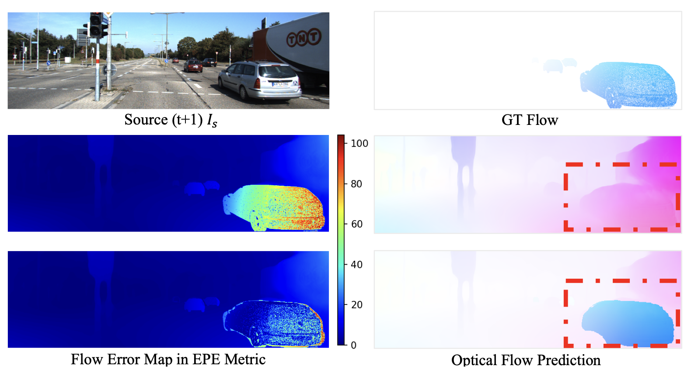
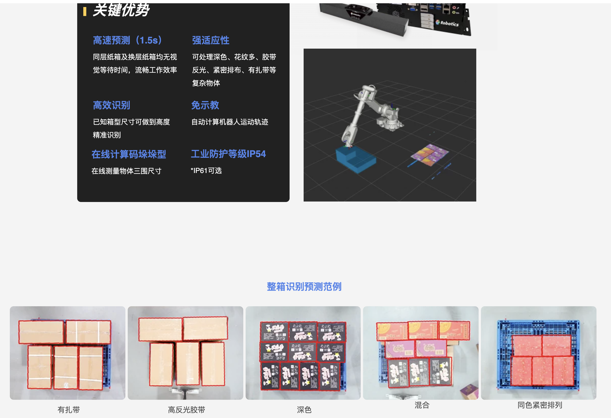

Qihao Huang 黄奇浩 Explorer in Math., Vision and Learning.Email: firstname.lastname AT outlook.com | LinkedIn |

|
Publications
*: equal contribution2021
-

> Self-supervised Learning of Decomposed Object-wise 3D Motion and Depth
from Monocular Videos
> Xiuzhe Wu*, Qihao Huang*, Xiaojuan Qi.
> PDF / Code / Project Page / Slides /
Projects Demo
-

> XYZ Robitics Depat
-
> XYZ Robitics Picking
Manuscripts
- Awesome Self-supervised Depth.
- Awesome Video Instance Segmentation.
- 3D Rigid Motion: Homogeneous, Rodrigues’s Formula, Quaternion.
- Camera Model: Intrinsic, Extrinsic Matrix.
- Gaussian: Composite Distribution.
- Image Warping: Forward, Inverse, Interpolation.
- Research Overview: Reading, Writing, Schedule.
- Noun, Verb, Conj, Adj, Phrase for Writing.